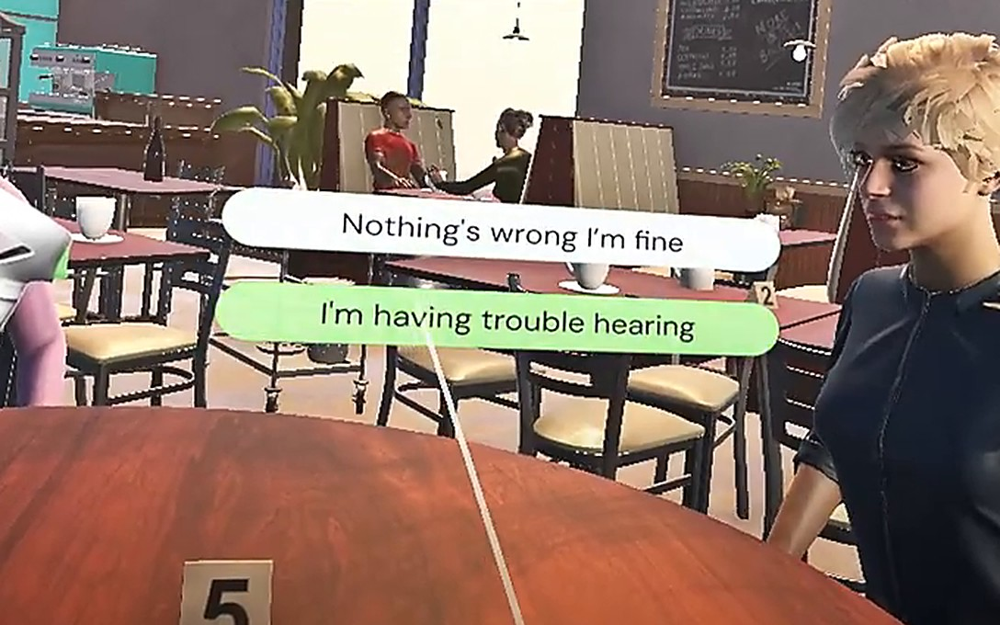

01
Experiencing communication from another perspective
This project explores how VR can be used to communicate the everyday challenges of hearing loss.
Set in a café, the experience places the user in conversations with three other people while gradually changing the clarity of speech and surrounding sound to simulate different levels of hearing loss.
Rather than simply explaining hearing loss, the experience lets users encounter the frustration, confusion and social difficulty that can come with struggling to follow a conversation.
